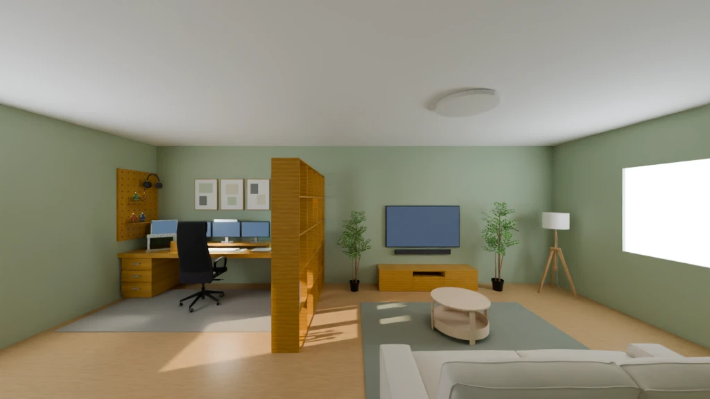
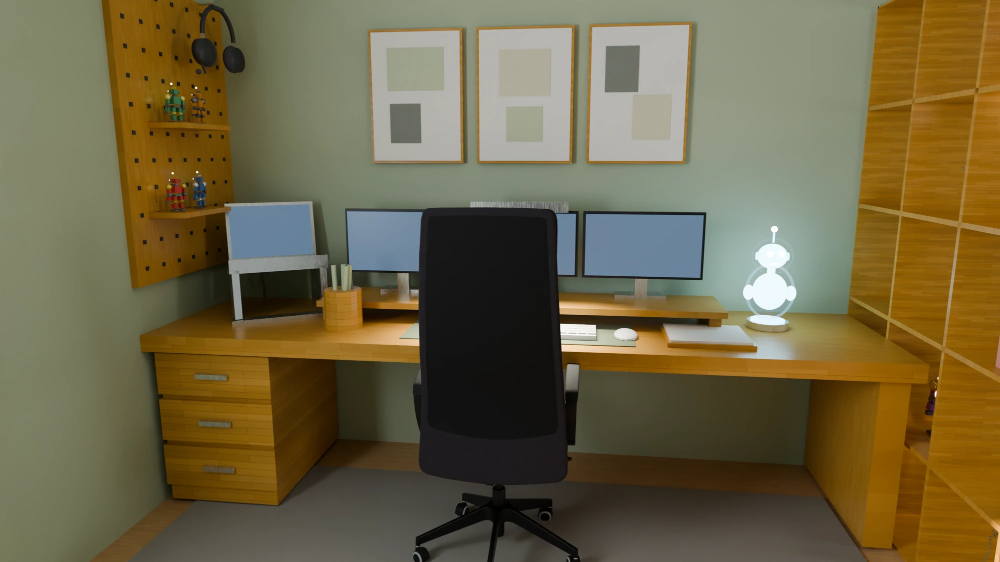
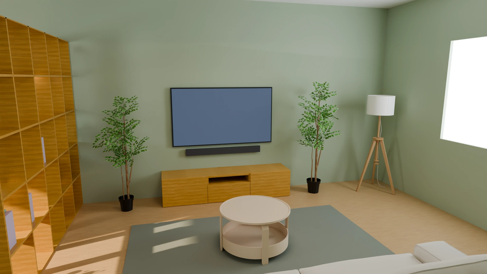

A home studio for the future
Studio2035.
Studio2035 was built in Blender. It combines a workstation and lounge.

The space
A quieter place
to create.
Studio2035 is a 3D concept for a futuristic home studio set in 2035, created in Blender for an AI-prompting class assignment.
The approximately 15 × 15 ft room combines a matcha-green and cream palette, warm wood furniture, soft window light, a three-monitor workstation, and a TV lounge, with a holographic robot assistant above the desk.
- Environment
- Home studio · 15 × 15 ft
- Tools & materials
- Blender, Claude, IKEA Browser, AmbientCG
- Outputs
- Three stills and a 20-second walkthrough


The process
Built in stages.
Refined in layers.
Claude, connected to Blender, helped build the scene in stages: the room shell, furniture blocks, detailed IKEA furniture imported with the IKEA Browser extension, AmbientCG materials, and lighting.
Three rounds of layout, material, and lighting refinements followed. The camera path connects the workstation and hologram, the divider, and the lounge area.
Through the room
Take a look around.
20 seconds · 1080p · 24 fps
Keep exploring.
Back to projects